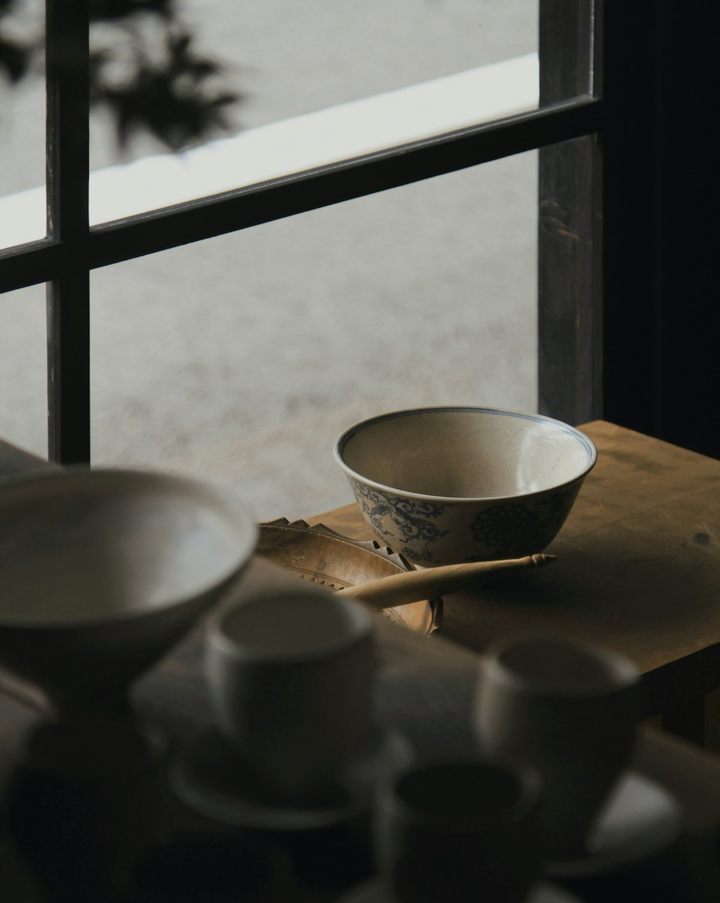
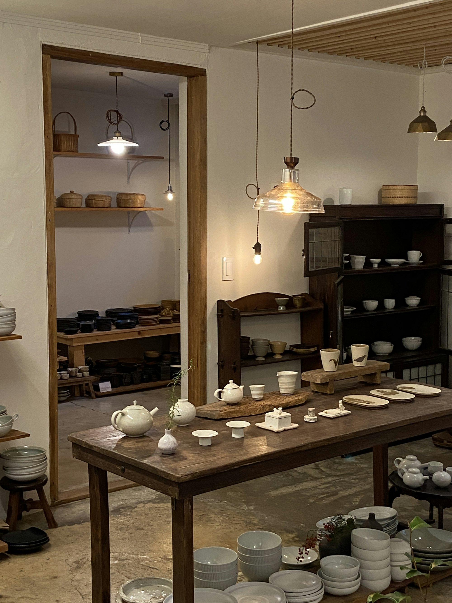
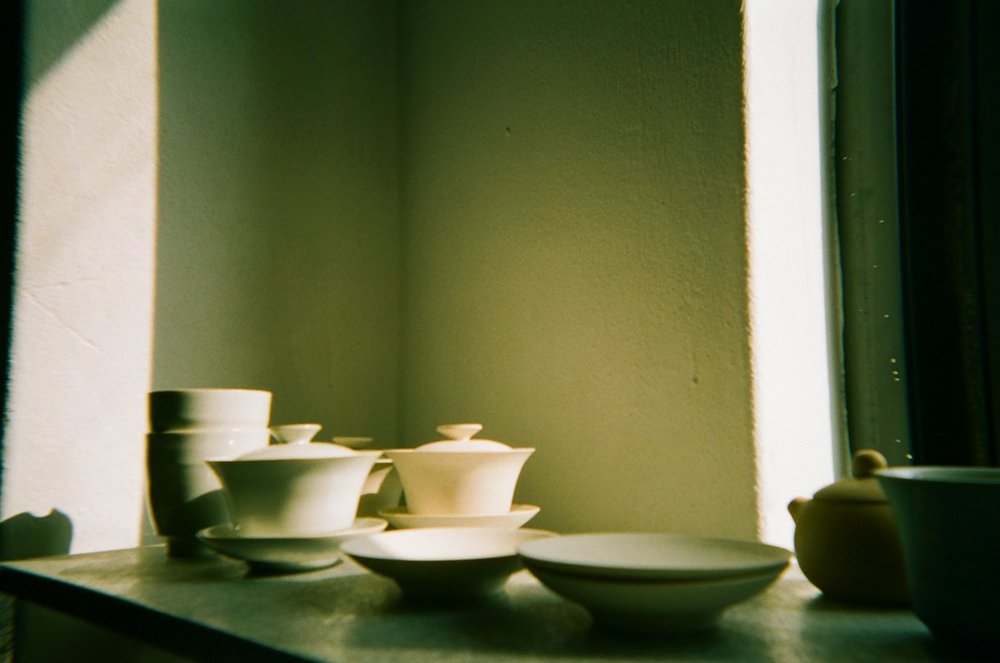
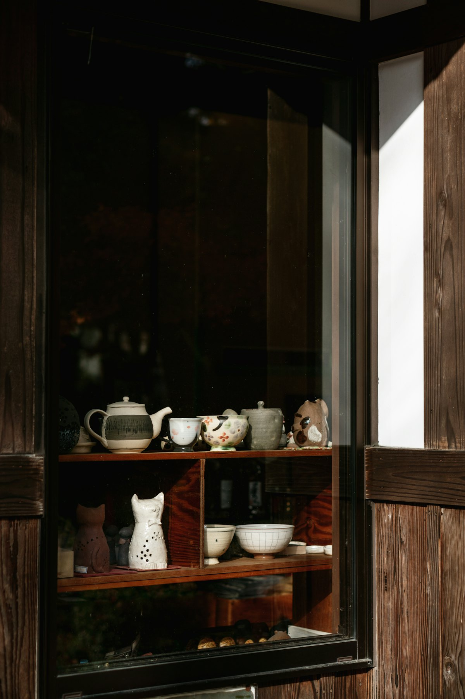

清水焼・有田焼
日々の食卓に、凛とした一枚を。

和食器 神楽坂三丁目
明治25年創業。清水焼・有田焼・萩焼・備前焼・江戸切子など、職人仕事の美しさが感じられる器をそろえています。
和食器 神楽坂三丁目
明治25年創業。清水焼・有田焼・萩焼・備前焼・江戸切子など、職人仕事の美しさが感じられる器をそろえています。
ドラッグすると、器を回して眺められます。焼き物の違いも、ボタンやスクロールで見比べられます。
3Dのイメージです。実際の商品ではありません
使いやすい器、お料理の邪魔をしない控えめな器、口当たりの良いグラスや盃。季節感を大切に、春夏秋冬で品ぞろえを変えています。
器は手に持って使うもの。重さや厚み、手の中へのおさまり具合を、ぜひ実際に手に取って選んでください。

日々の食卓に、凛とした一枚を。

使うほどに表情が育つ、土の器。

口当たりの良いグラスや盃を、季節ごとに。
…
| 火〜金 | 10:00〜19:00 |
|---|---|
| 土曜 | 11:00〜18:00 |
| 日曜・祝日 | 12:00〜18:00 |
| 定休日 | 月曜（仕入れなどで臨時休業あり） |
在庫や取り寄せのお問い合わせは、お電話かメールでどうぞ。